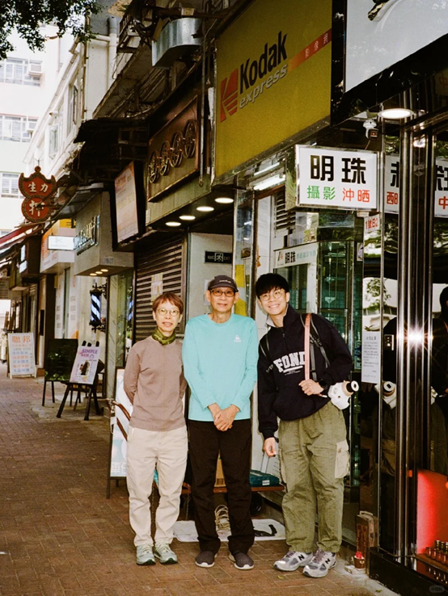
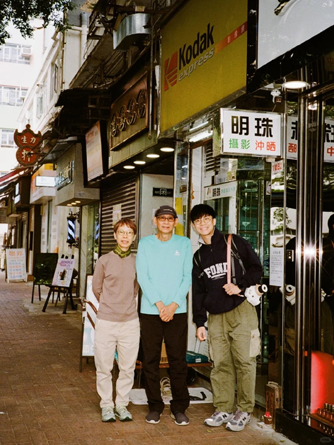

"Time Fly Slow with Film" is a film camera grocery store located in Tsim Sha Tsui, Hong Kong. Its pursuit of retro film cameras and unique business methods attract many young people to come to take photos and shop. In the fashionable and innovative Hong Kong, this small store has left memories of Hong Kong's 1990s.

“We wanted to make it easy on ourselves and opened at random times.”
"We hope customers will experience this process slowly. Instead of getting photos quickly, if that's the case, why not just use a digital phone to take photos?" the boss said.This unique shop possesses two exceptional features that add an artistic and mysterious touch. Firstly, its opening hours are uncertain, and the latest business hours are updated daily on Instagram. This element of uncertainty creates anticipation and a sense of mystery for customers, while also fostering interaction and engagement. Secondly, even when the shop is not open, customers can still deposit their film rolls for development in the mailbox located at the shop's entrance. The owner personally handles these film rolls and meticulously develops them. This arrangement not only meets customers' needs but also showcases the owner's care and attentive service. This distinctive approach provides convenience and a special experience for customers, further strengthening the trust and connection between the shop and its clientele.

“I'm a nostalgic person and these dolls are all outdated dolls from my childhood collection.”
This vintage film camera store is like stepping into a time portal. The nostalgic ambience neatly arranged vintage dolls, and adorned walls with black and white photographs create a captivating atmosphere. Rows of vintage cameras add to the charm, while gentle melodies infuse a romantic mood. Visitors can not only purchase cameras and supplies but also experience the allure of photographic art and evoke a sense of nostalgia.
“I provide all services related to film cameras here,” the shop owner said.In this enchanting vintage film camera store, the shop owner offers a range of captivating services for both photography enthusiasts and nostalgic seekers. Whether you are a budding beginner or an experienced photographer, this place caters to your needs. The shop knows how to capture the beauty of every moment and presents them before your eyes with exquisite craftsmanship. Whether in black and white or vibrant colours, every photograph is treated with delicacy and treasured as a piece of art. For those who cherish vintage photography, this store provides a diverse selection of film cameras and rolls. Here, you can find fascinating old-fashioned cameras with silver exteriors and worn leather covers that exude the marks of time and unique charm. And the colourful film rolls will infuse your photographs with a rich vintage atmosphere. Additionally, the shop owner offers instant photography services with Polaroid cameras, allowing you to capture and share beautiful moments in an instant. These classic Polaroid cameras not only capture every detail but also instantly print them on paper, making memories feel real and within reach.

“Developing film is not difficult, but few people know how to do it these days.”

Time and film slowly pass by, but the memories of those moments when time seemed to move at a leisurely pace remain vivid. The shop owner of this enchanting vintage film camera store is a tall, slender young man with a pair of round glasses that give him a warm and approachable demeanour. He exudes a strong artistic aura, resembling a cultured and literary individual. His attire is simple yet tasteful, often seen wearing fitted shirts and finely tailored suits, complemented by fashionable accessories that showcase his attention to detail and unique sense of style. However, his charm extends beyond his appearance. He possesses a profound understanding of photography, art, and culture, and he enjoys sharing photography stories and techniques with customers. His expertise and enthusiasm make him a trusted guide and mentor for customers. The presence of this young shop owner adds a special allure to the store, attracting photography enthusiasts and nostalgic seekers who come to explore and experience the magical world of photography.
 

“I can't imagine that cultural inheritance is actually happening to me.”
During the interview, the owner told me why he chose this career.In the store, there is a sign that reads "Ming Zhu Photography Studio," a long-closed old photo lab that reveals the backstory behind the owner's choice of profession. "This couple is really good to me, and also taught me a lot of skills. I also imagine that they like the industry that they like most." The owner said.Ming Zhu Studio was the place where the owner's journey in photography began. “I still remember when I used to walk through the city centre after school, even if I didn't go in to develop my film, sometimes I would stroll into Ming Zhu's shop and peer into the glass display cabinet to see what cameras they had or pay my respects at the entrance.”“Ming Zhu Digital Photography Lab. When news of their retirement broke, many residents of Tuen Mun came online to share their memories. Despite its humble appearance, I asked them to let me preserve their sign. I thought that since this place held meaning for so many of our neighbours, even if they decided not to continue operating, we should preserve some traces of its existence. To carry on this legacy of dedication and professionalism.”
“If you take a picture with your phone, it's fast and cheap. But every time you press the shutter in the film camera, it becomes cautious and conscientious.”

Even though the photo quality of smartphones and digital cameras is already quite impressive, most of the customers who come here are young people. Cheery, a female college student, is a loyal customer of this store. She came today to develop film and bought another film camera."If I take photos with my phone, it's quick and cheap, which makes me more casual with each shutter press." Film rolls for film cameras can be quite expensive, so every time you use it to take photos, the photographer needs to be cautious to avoid wasting film. This way, every time you see the final developed photos, it carries the memory of that moment, rather than just being one of the thousands of photos in your phone's gallery.
The store owner said that he will hold some teaching activities on the use of film cameras and some salon activities for photography enthusiasts in the future. Let more people like this culture.
This store is located next to Chungking Mansion in Tsim Sha Tsui, Hong Kong. The map is as follows.